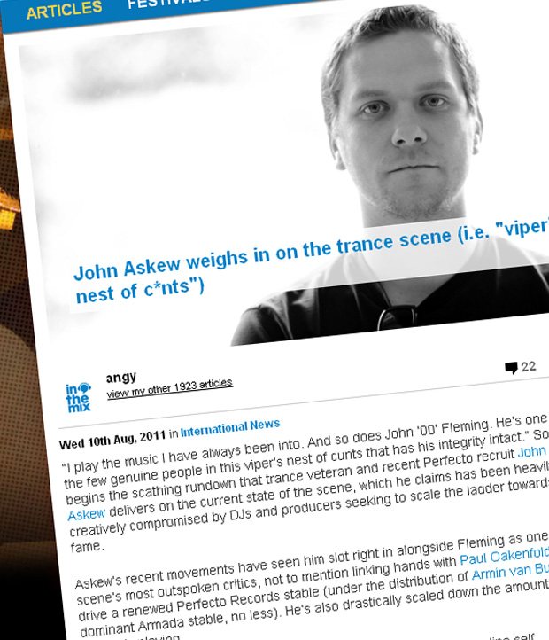

John Askew weighs in on the trance scene (i.e. "viper’s nest of c*nts")
{kind=link}

“I play the music I have always been into. And so does John ‘00’ Fleming. He’s one of the few genuine people in this viper’s nest of cunts that has his integrity intact.” So begins the scathing rundown that trance veteran and recent Perfecto recruit John Askew delivers on the current state of the scene, which he claims has been heavily creatively compromised by DJs and producers seeking to scale the ladder towards fame.
Askew’s recent movements have seen him slot right in alongside Fleming as one of the scene’s most outspoken critics, not to mention linking hands with Paul Oakenfold to help drive a renewed Perfecto Records stable (under the distribution of Armin van Buuren’s dominant Armada stable, no less). He’s also drastically scaled down the amount of DJ gigs he’s playing.
“I have also cut away all unnecessary and hugely time consuming online self masturbation that seems to have become so essential for those who care about ‘working their way up the ladder’,” he told ITM ahead of his October visit as part of the Godskitchen tour. It’s this insistent climb towards the top of the DJ Mag Top 100 poll that he claims has much to do with the perceived stifled creativity in the wider scene.
“The attraction of making more money and getting a higher position in the DJ Mag Top 100 is a seductive prospect for a lot of impressionable young DJ/producers and I entirely sympathise with those who get sucked into it, but I’m not impressionable. I make the music I want to make and enjoy playing it to an underground of like-minded people who are also fans of that sound.”
Askew will take the stage at Godskitchen alongside Marco V, Ben Gold and Richard Durand. If you’re one of those “like minded people” who’ll be on the dancefloor, add yourself to the roll-call for your city!